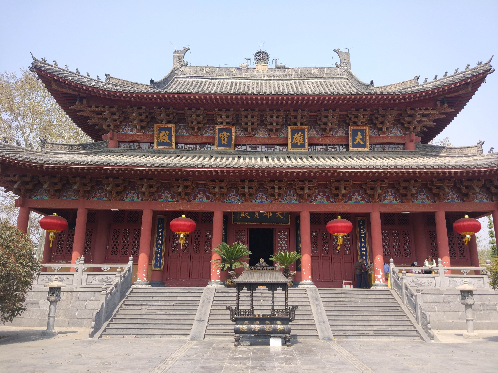
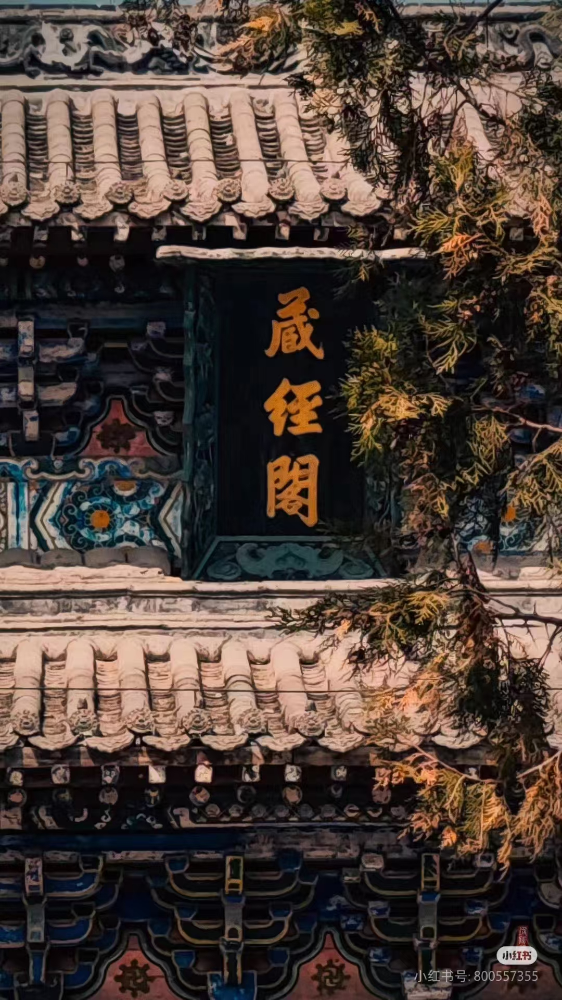
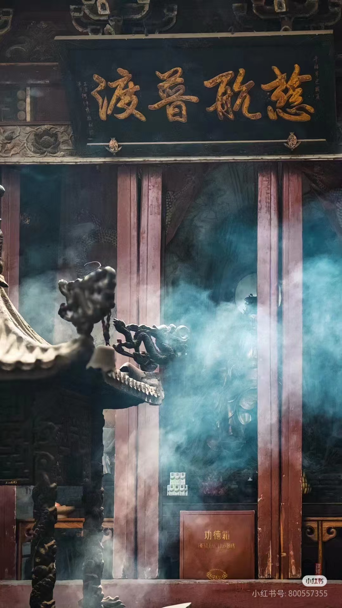
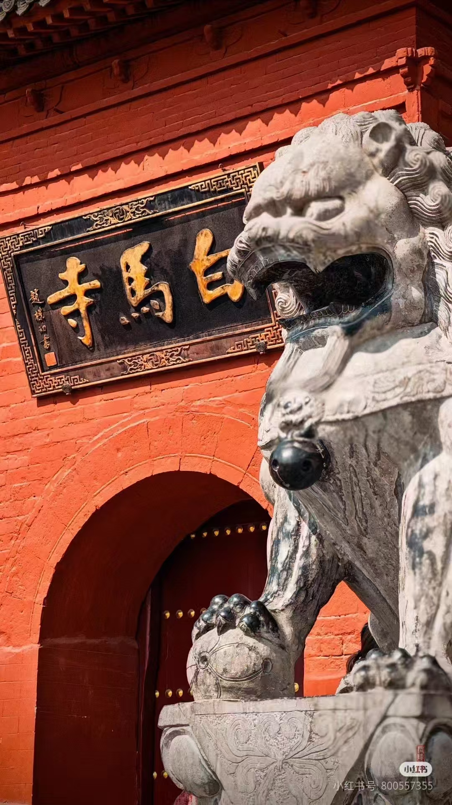

简介

历史渊源
始建东汉：东汉永平十一年（公元 68 年），汉明帝为供养来自西域的高僧摄摩腾、竺法兰以及他们所带来的佛经佛像，修建了白马寺。其修建与 “永平求法” 紧密相连，蔡愔、秦景等前往印度求佛法，用白马驮载佛经、佛像返回洛阳，为铭记白马驮经之功，遂将寺院取名 “白马寺”。
历代兴衰：三国至北魏时期，白马寺历经多次焚毁与重建；隋唐时规模宏大，武则天时期薛怀义负责主持修建工作；安史之乱、唐武宗灭佛等使其多次被毁；宋太宗、元世祖等都曾下诏重建；明太祖时也曾下令修建，嘉靖年间进一步扩建，今日所见白马寺大致就是此次重修保留下来的结构与布局。
建筑布局与特色
中轴建筑：整个寺庙坐北朝南，主要建筑天王殿、大佛殿、大雄殿、接引殿、毗卢阁等均列于南北向的中轴线上。
清凉台：被称为 “空中庭院”，由青砖镶砌，长 43 米，宽 33 米，高 6 米，具有古代东方建筑特色。毗卢阁位于清凉台上，重檐歇山，飞翼挑角，与周围配殿、僧房等附属建筑布局整齐，自成院落。
齐云塔：位于白马寺山门东侧，是一座四方形密檐式砖塔，13 层，高 35 米。其前身为白马寺的释迦如来舍利塔，金大定十五年（1175 年）重建，是洛阳现存最早的古建筑。
文化价值
佛教传播意义：白马寺是中国佛教发源地，摄摩腾、竺法兰在此译出中国第一部佛家经典《四十二章经》，为佛教在中国的传播奠定了基础。
艺术价值：寺内保存有众多元代夹苎干漆造像工艺塑成的罗汉像等珍贵文物，还有赵孟頫书刻的《洛京白马寺祖庭记》碑等，具有极高的艺术价值。
国际交流意义：白马寺是全球唯一具有中、印、缅、泰四国文化风情佛殿的国际化庙宇，2010 年印度风格佛殿落成，2014 年缅甸风格佛殿落成，泰国风格佛殿也进行了扩建竣工，促进了中外佛教文化交流
始建东汉：东汉永平十一年（公元 68 年），汉明帝为供养来自西域的高僧摄摩腾、竺法兰以及他们所带来的佛经佛像，修建了白马寺。其修建与 “永平求法” 紧密相连，蔡愔、秦景等前往印度求佛法，用白马驮载佛经、佛像返回洛阳，为铭记白马驮经之功，遂将寺院取名 “白马寺”。
历代兴衰：三国至北魏时期，白马寺历经多次焚毁与重建；隋唐时规模宏大，武则天时期薛怀义负责主持修建工作；安史之乱、唐武宗灭佛等使其多次被毁；宋太宗、元世祖等都曾下诏重建；明太祖时也曾下令修建，嘉靖年间进一步扩建，今日所见白马寺大致就是此次重修保留下来的结构与布局。
建筑布局与特色
中轴建筑：整个寺庙坐北朝南，主要建筑天王殿、大佛殿、大雄殿、接引殿、毗卢阁等均列于南北向的中轴线上。
清凉台：被称为 “空中庭院”，由青砖镶砌，长 43 米，宽 33 米，高 6 米，具有古代东方建筑特色。毗卢阁位于清凉台上，重檐歇山，飞翼挑角，与周围配殿、僧房等附属建筑布局整齐，自成院落。
齐云塔：位于白马寺山门东侧，是一座四方形密檐式砖塔，13 层，高 35 米。其前身为白马寺的释迦如来舍利塔，金大定十五年（1175 年）重建，是洛阳现存最早的古建筑。
文化价值
佛教传播意义：白马寺是中国佛教发源地，摄摩腾、竺法兰在此译出中国第一部佛家经典《四十二章经》，为佛教在中国的传播奠定了基础。
艺术价值：寺内保存有众多元代夹苎干漆造像工艺塑成的罗汉像等珍贵文物，还有赵孟頫书刻的《洛京白马寺祖庭记》碑等，具有极高的艺术价值。
国际交流意义：白马寺是全球唯一具有中、印、缅、泰四国文化风情佛殿的国际化庙宇，2010 年印度风格佛殿落成，2014 年缅甸风格佛殿落成，泰国风格佛殿也进行了扩建竣工，促进了中外佛教文化交流
中国第一古刹
白马驮经事已空，断碑残刹见遗踪
穿越千年
榴花艳艳开茆屋，杨柳阴阴隐佛楼
虔诚祈祷
禅空心已寂，世路任多岐
图片一览




